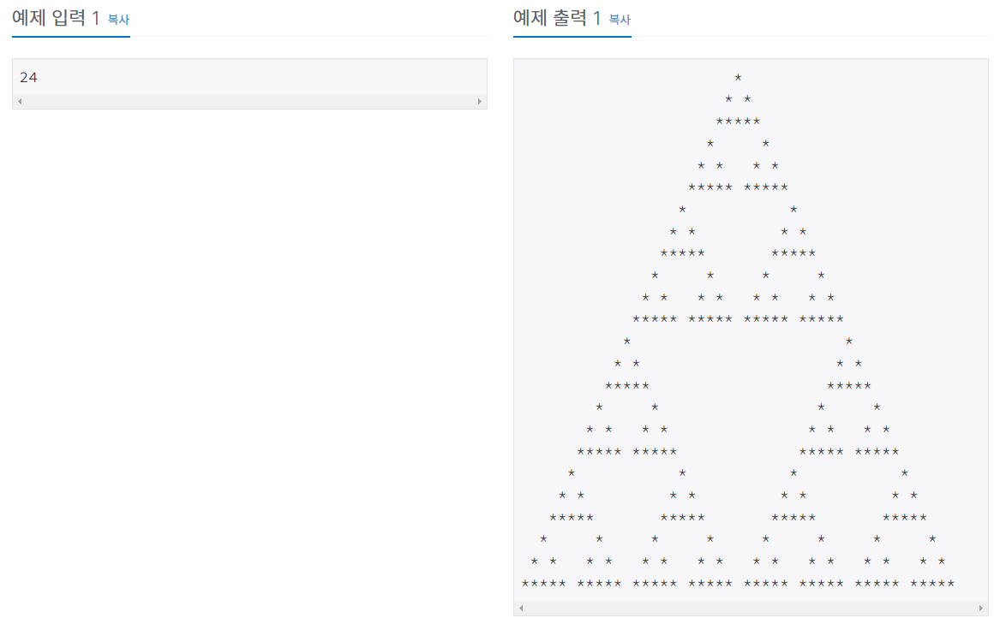
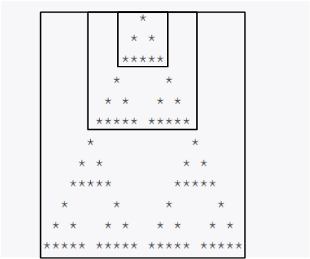
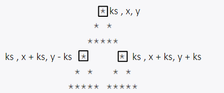

#INFO
난이도 : GOLD4
문제유형 : 재귀
출처 : 2448번: 별 찍기 - 11 (acmicpc.net)
2448번: 별 찍기 - 11
첫째 줄에 N이 주어진다. N은 항상 3×2k 수이다. (3, 6, 12, 24, 48, ...) (0 ≤ k ≤ 10, k는 정수)
www.acmicpc.net

#SOLVE
같은 패턴이 반복되는 재귀 유형 알고리즘 문제이다. 가장 기본이 되는 삼각형의 규칙을 찾아 base condition으로 설정한 뒤, 삼각형 각각의 좌표를 fill_star(배열에 알맞은 *을 채워 주는 함수)의 파라미터로 보낸 뒤 재귀로 호출하여 풀이하였다.
void fill_star(int x, int y){
board[x][y] = '*';
board[x+1][y-1] = '*';
board[x+1][y+1] = '*';
for(int i = y - 2; i <= y + 2 ; i++)
board[x+2][i] = '*';
}
재귀 함수 호출의 좌표는 세 삼각형의 위쪽 꼭지점 좌표를 보낸다. (ks = n / 2)
void recur(int k, int x, int y){
if(k == 3){
fill_star(x, y);
return;
}
int ks = k / 2;
recur(ks, x, y);
recur(ks, x + ks, y - ks);
recur(ks, x + ks, y + ks);
}
#CODE
#include <bits/stdc++.h>
using namespace std;
const int MAX = 1024 * 3 + 2;
int n;
char board[MAX][MAX * 2 - 1];
void fill_star(int x, int y){
board[x][y] = '*';
board[x+1][y-1] = '*';
board[x+1][y+1] = '*';
for(int i = y - 2; i <= y + 2 ; i++)
board[x+2][i] = '*';
}
void recur(int k, int x, int y){
if(k == 3){
fill_star(x, y);
return;
}
int ks = k / 2;
recur(ks, x, y);
recur(ks, x + ks, y - ks);
recur(ks, x + ks, y + ks);
}
int main(void) {
ios::sync_with_stdio(0);
cin.tie(0);
cin >> n;
recur(n, 0, n-1);
for(int i = 0; i < n; i++){
for(int j = 0; j < n * 2 - 1; j++){
if(board[i][j] == '*')
cout << '*';
else
cout << ' ';
}
cout << '\n';
}
return 0;
}